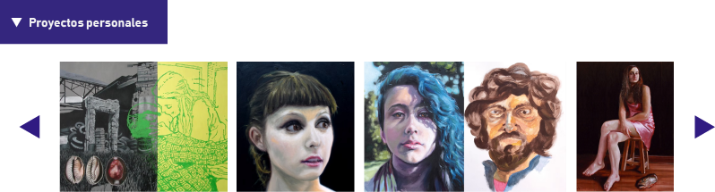
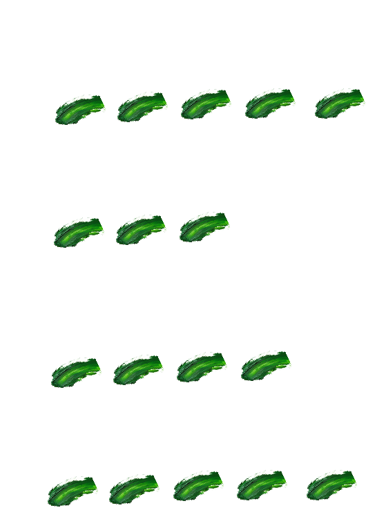
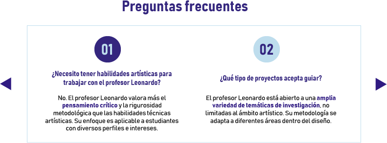
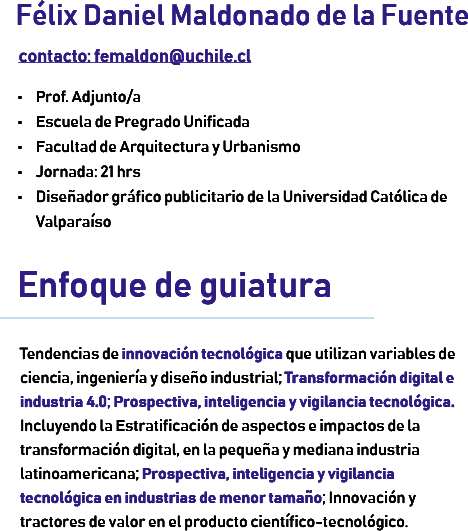
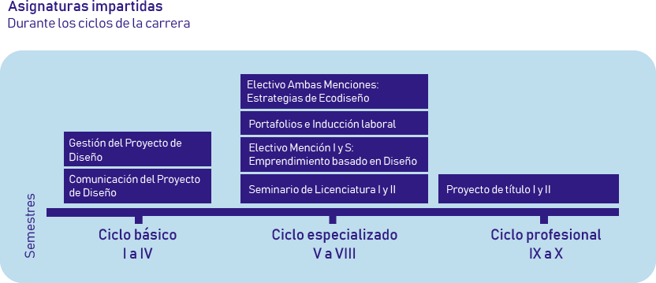
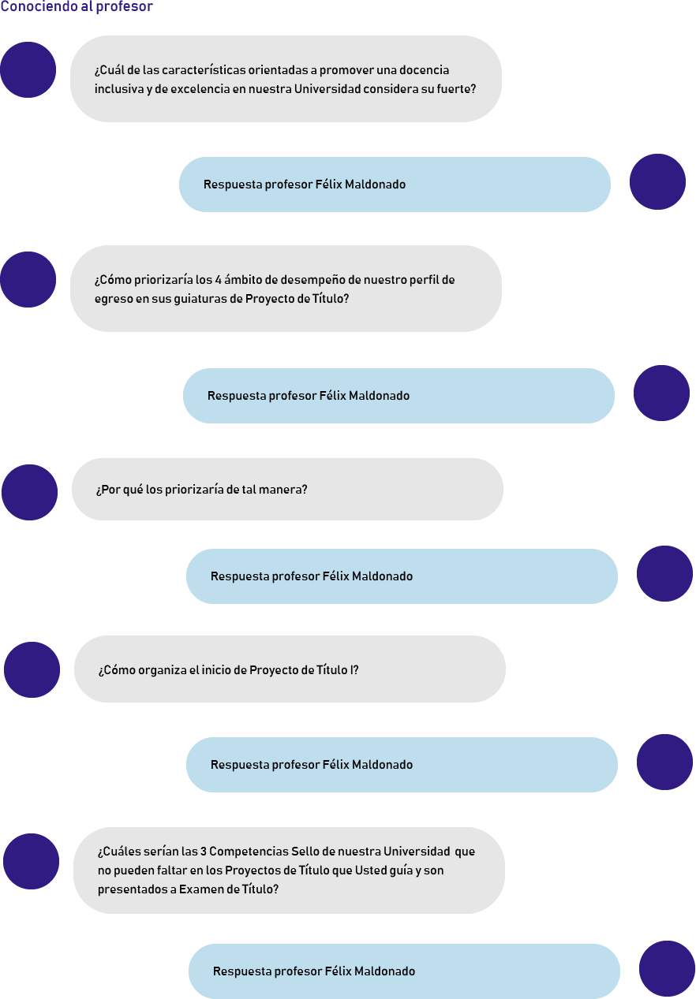
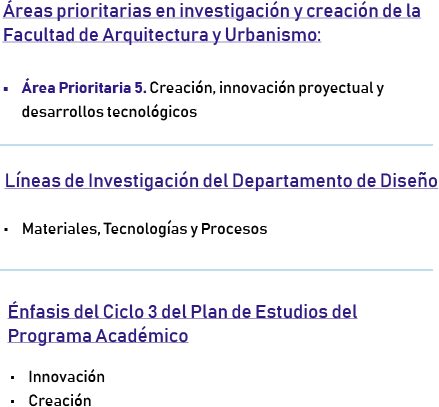
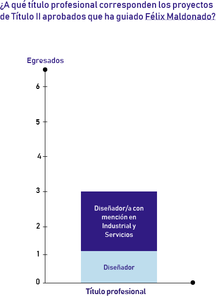
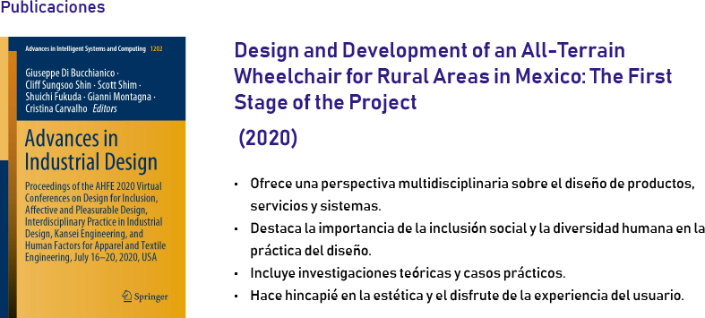

Leonardo Soto Calquín
correo: leonardosoto@uchile.cl
Profesor Asistente
Categoría académica docente
Departamento de Diseño
Facultad de Arquitectura y Urbanismo
Jornada: 22hrs
Leonardo Soto Calquín es Artista Visual y Diseñador con Mención en Comunicación Visual.
Sus estudios en diseño los realiza en la Universidad Tecnológica Metropolitana, en Santiago de Chile. Luego cursa el Magister en Artes Visuales en la Universidad de Chile. Posee el grado de Master, cursado en la Universidad de Granada, en España.
Ha trabajado en numerosas empresas de diseño, en Chile y en el extranjero. También ha expuesto su obra pictórica en Chile y en otros países. Actualmente se desempeña como docente del Departamento de Diseño, de la Facultad de Arquitectura y Urbanismo de la Universidad de Chile. Labor que complementa con su trabajo creativo.

Valores académicos
Disposición
3. Implicancias para la docencia
Punto 3 página 60
Exigencia
3. Implicancias para la docencia
Punto 8 página 62
Diálogo y comunicación
Competencias sello de la Universidad
Punto c página 52
Flexibilidad
Competencias sello de la Universidad
IV Elementos del trayecto del plan de formación. Ciclos formativos. Página 56.








¿Cómo se relaciona su nota aprobatoria previa, de Proyecto de Título I, con la nota definida por la comisión examinadora de Proyecto de Título II?
¿Qué parte de las inscripciones en la asignatura de Proyecto de Título II con se han convertido en Exámenes de Título aprobados?
| Egresado/a | Título | Semestre | Proyecto | Nota |
|---|